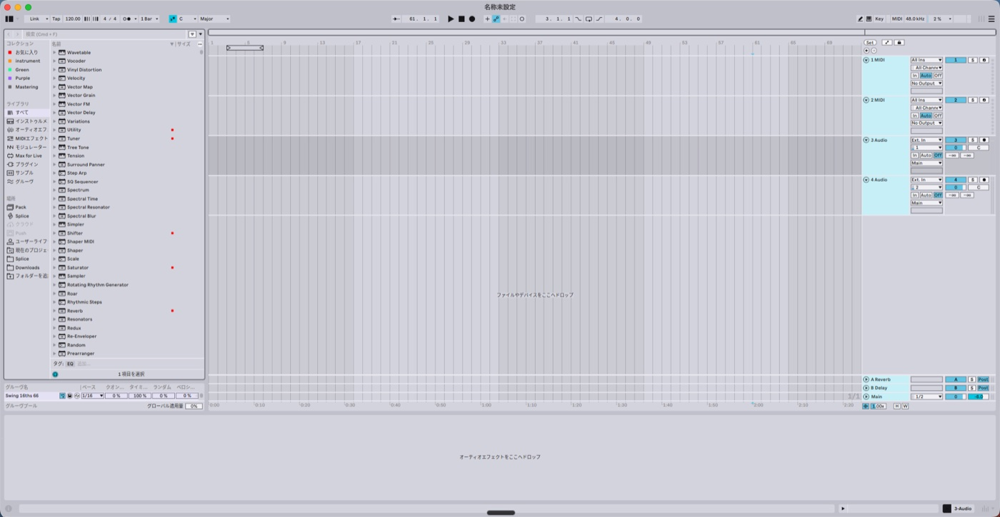
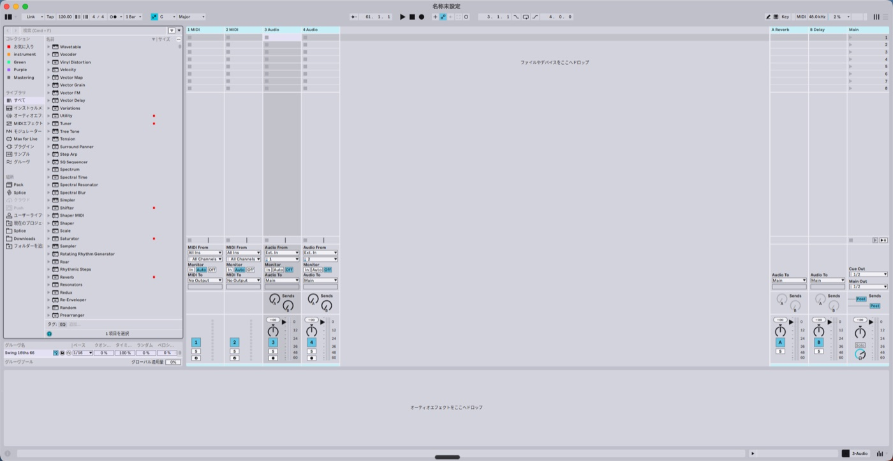
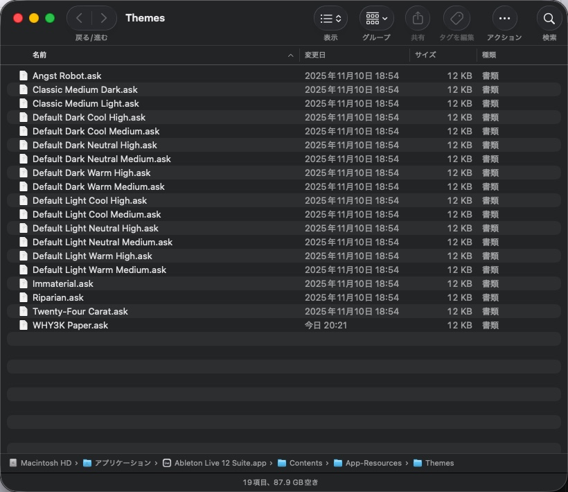
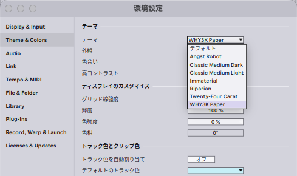

WHY3K が Ableton Live 12 で使っているテーマです。下の画面そのまま。


ダウンロードした ZIP を解凍すると、中に インストール方法.html が入っています。
ダブルクリックすれば同じ手順が図つきで開きます。ターミナルは要りません。
Live 12 のテーマは Ableton Live アプリの中に入れないと認識されません。 よく紹介されているユーザーライブラリではないので注意してください。
WHY3K Paper.ask を選んで ⌘C でコピー/アプリケーション の Ableton Live を右クリック → 「パッケージの内容を表示」Contents → App-Resources → Themes を開いて ⌘V で貼り付け（許可を求められたら許可）環境設定 → Theme & Colors → テーマ から WHY3K Paper を選ぶ

テーマ一覧に出てこない — 入れた場所が違う可能性があります。
~/Music/Ableton/User Library/Themes/ は効きません（Live 12.4 で確認）。
アプリの中の Contents/App-Resources/Themes に入れて、Live を再起動してください。
貼り付けようとすると許可を求められる — アプリの中を書き換えるので macOS が確認してきます。 許可（Touch ID かパスワード）で進めて問題ありません。
同梱の インストール.command を右クリック → 開く で、この Mac に入っている Live 全部へ一括で入れられます。
「開発元を検証できません」と出るのは、署名していない個人配布物だからです。
「適切なアクセス権限がないため実行できません」と言われたら実行権限が落ちています。次の1行でも同じことができます。
bash "インストール.commandへのパス"